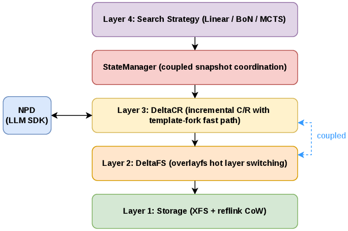
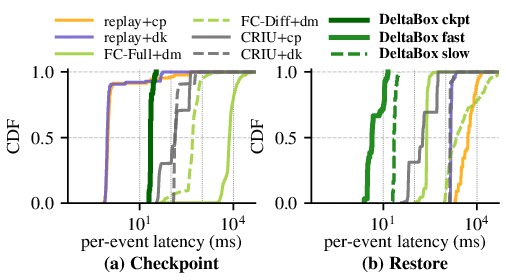
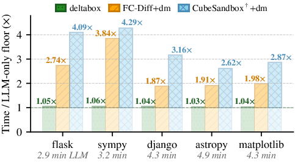
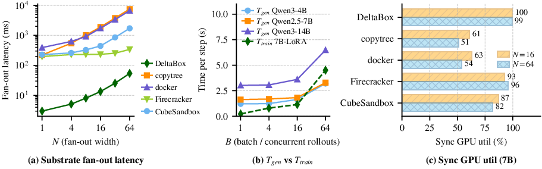

Abstract
LLM-powered AI agents require high-frequency state exploration (e.g., test-time tree search and reinforcement learning), relying on rapid checkpoint and rollback (C/R) of the complete sandbox state, including files and process state (memory, contexts, etc.). Existing mechanisms duplicate the entire state, causing hundreds of milliseconds to seconds of latency per C/R, which severely bottlenecks deep search and large-scale fan-outs.
This paper observes that subsequent checkpoints in AI agents are highly similar. Therefore, instead of full duplication, a sandbox should only duplicate the changes between consecutive checkpoints (Key Insight). We propose a new OS-level abstraction, AgentState, to enable change-based transactional C/R for AI agents with two co-designed OS mechanisms: DeltaFS for change-based filesystem C/R, and DeltaCR for change-based process state C/R.
We then present DeltaBox, a novel agent sandbox achieving millisecond-level C/R through these two new mechanisms. Evaluations on SWE-bench and RL micro-benchmarks show DeltaBox completes checkpoint and rollback in millisecond-level latency (14 ms and 5 ms, respectively), empowering agents to explore substantially more nodes under fixed time budgets.
Highlights
14 ms checkpoint
Incremental CRIU dump hidden under the LLM inference window,
with a template-creating fork() ready for
low-millisecond restore.
5 ms rollback
OverlayFS layer-switch ioctl in parallel with a
warm template fork(). No full process or
filesystem image is rebuilt on the critical path.
OS-level integration
A modified Linux 6.8 overlayfs module plus a CRIU-coordinated template pool, exposing a single transactional AgentState primitive to user space.
1–3 orders of magnitude
Faster than file-copy and container/VM baselines across SWE-bench MCTS replay and RL training fan-out.
System Overview

MCTS in Motion

Key Results



Found this useful?
Star the project on GitHub to support our work and stay updated on future releases.
⭐ Star on GitHubBibTeX Citation
@article{dong2026deltabox,
title = {DeltaBox: Scaling Stateful AI Agents with Millisecond-Level Sandbox Checkpoint/Rollback},
author = {Dong, Yunpeng and He, Jingkai and Hou, Yuze and Du, Dong and Xu, Zhonghu and Yu, Si and Xia, Yubin and Chen, Haibo},
year = {2026},
eprint = {2605.22781},
archivePrefix = {arXiv},
primaryClass = {cs.OS},
url = {https://arxiv.org/abs/2605.22781}
}